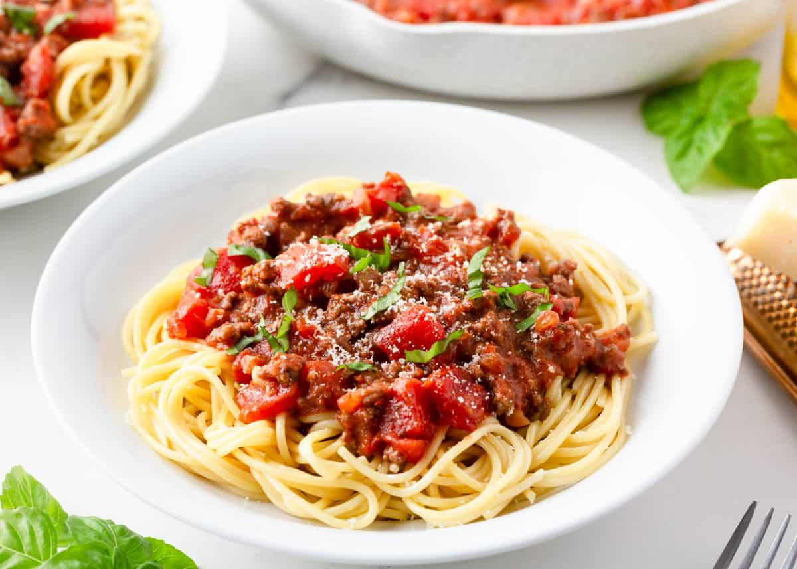

Spaghetti

Description
This spaghetti and meat sauce is one of my tried-and-true easy dinner recipes. It’s simple, family-friendly and ready in just 30 minutes. Doesn’t get better than that!
Ingredients
- Onions and garlic: These aromatics add wonderful flavor! Sauté them in oil first before adding the meat.
- Meat: I like to use ground beef, but Italian sausage works really well, too.
- Tomato sauce: This easy spaghetti recipe calls for 1 jar of marinara or spaghetti sauce (I love Prego spaghetti sauce), but you can make your own homemade marinara sauce if you prefer.
- Diced tomatoes: I like the texture diced tomatoes add to the sauce, making it a bit heartier, but this is totally optional.
- Spaghetti: This long noodle is ideal for soaking up the sauce, but you can use any shape you like.
Steps
- Brown the meat. Heat olive oil in a frying pan. Add onions and cook until translucent. Stir in garlic and cook 1 more minute. Next add in meat and seasonings and cook until beef has browned.
- Simmer. Stir in marinara sauce and tomatoes and let simmer uncovered.
- Cook noodles. While sauce is simmering, cook the spaghetti noodles according to package.
- Serve and enjoy! Serve meat sauce over cooked pasta and top with fresh basil and parmesan cheese, if desired.